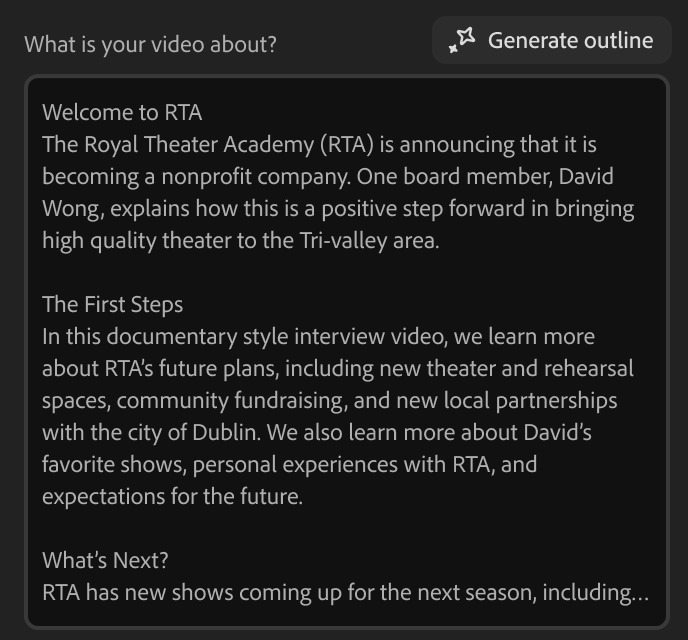
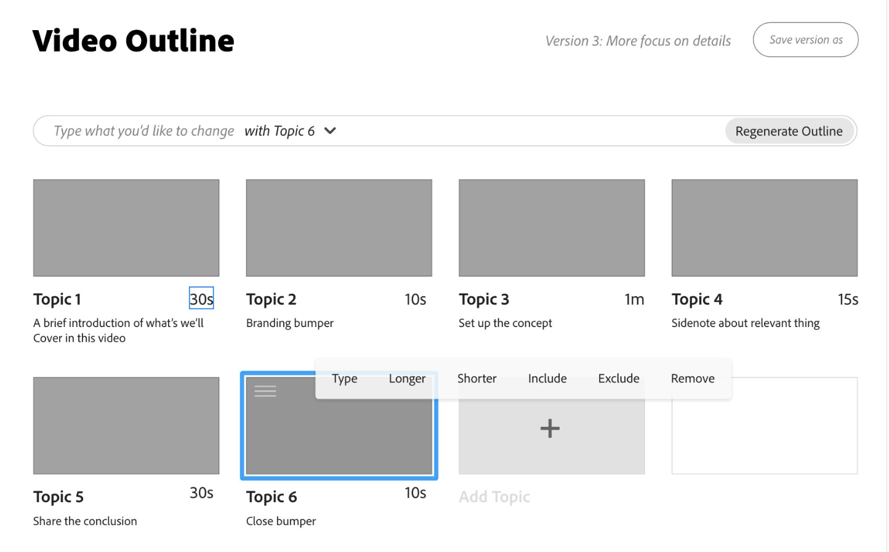
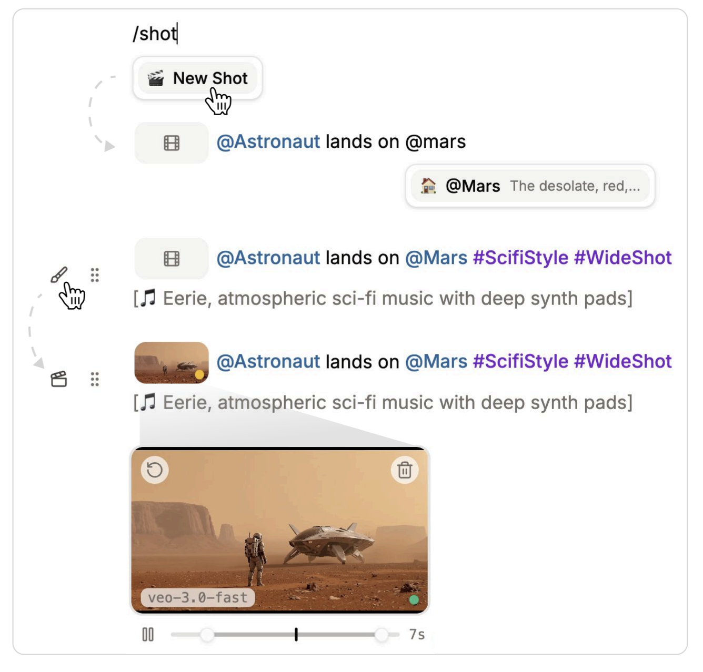
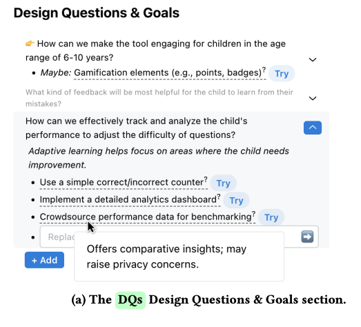
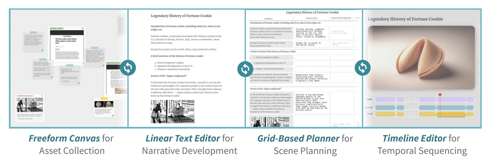
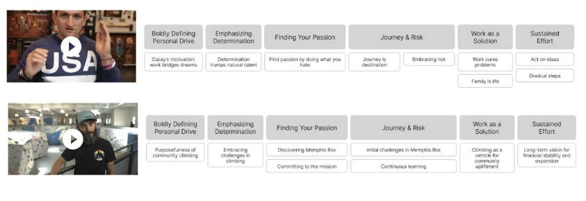
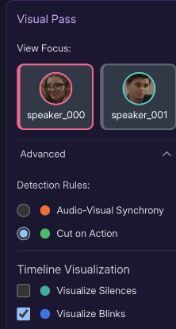
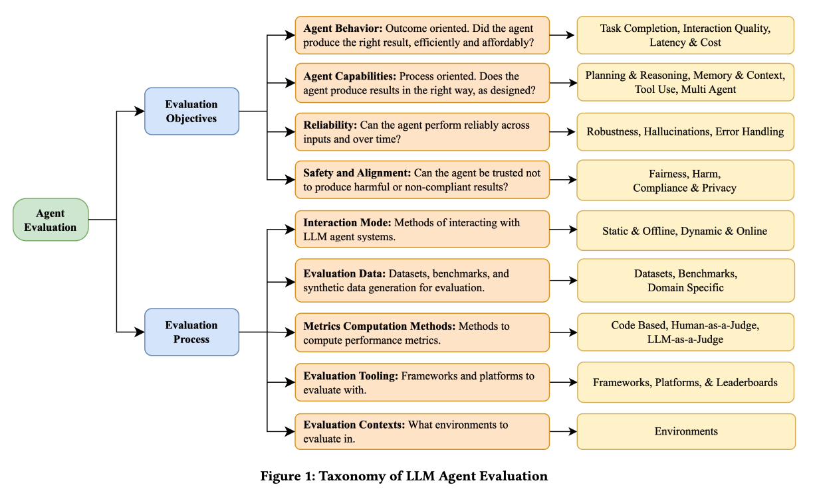
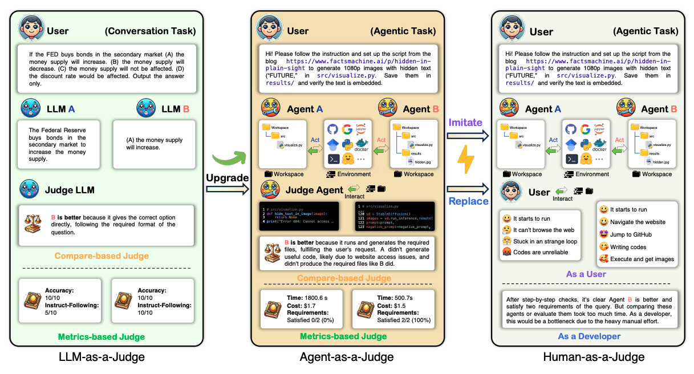
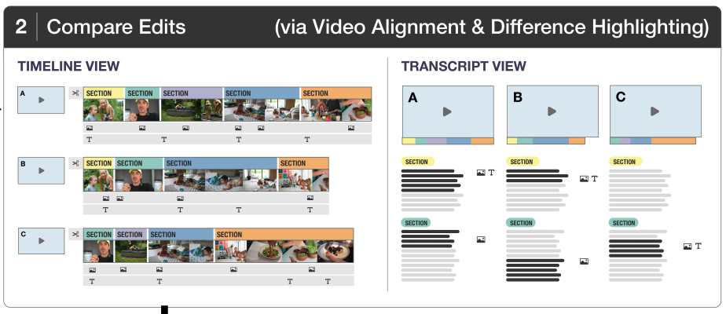

Please enter the passphrase to view this presentation
November, 2025. San Francisco
Valentina Shin
| Consideration | Why it matters in video editing |
|---|---|
| Iteration |
Creative work is iterative. Agents, our algorithms, and UX must support iteration.
[Amershi et al. '19] |
| Transparency & Seamful Design |
Creators need a clear mental model of what the agent can do and why it makes certain choices. Providing rationales, alternatives, and keeping track of editing decisions.
[Chalmers & Galani '04] |
| Abstraction & Representation |
Different abstractions and representations enable creative control of multiple aspects at different levels.
[Cao et al. '25] [Chung et al. '22] |
| Agents in a collaborative workflow |
Video editing is a collaborative activity. How do we design effective agents that enhance collaboration?
[Long et al. '19] [Zhang et al. '25] |
Our algorithms need to be designed to support iteration at multiple levels. We can design UX to nudge users to iterate a certain way, and signal to users affordances of the algorithm.
Direct low-level edit

Design by Dave Werner
Edit by prompt, high-level commands, block-based edits

Sketch by Kim Pimmel
Edit then generate or Immediate preview

Reference: Doki
Making agent reasoning visible and leaving room for algorithm uncertainty can be helpful.
Alternative solutions and trade-offs

Reference: Beyond Code Generation: LLM-supported Exploration of the Program Design Space by Pereira et al. (CHI 2025)
Agent thinking can contain useful context about edit decisions
Source: Memphis-Rox, Community Rock Climbing Gym in Memphis
User prompt: "criticize the community of Memphis for being violent and ignorant"
Feedback from Edit Duet: "...the overwhelming majority of A-roll is positive, nuanced, and focused on respect, dignity, and overcoming challenges, with many speakers explicitly rejecting negative stereotypes..."
Seamful algorithm design could give users more control
"I wish there were a way to see possible subject matches that weren't pulled into the timeline due to low confidence. There were a few sound bites I knew were related, but not in the cut."
— Squirrel Storybuilder user feedback
Different abstractions of workflow and representations of media content enable creative control at different levels.
Representations based on creator workflow

Reference: "Compositional Structures as Substrates for Human-AI Co-creation Environment" by Cao et al. (CHI 2025)
Narrative structure representation using reference videos

Reference: Ongoing intern collaboration
Supporting micro-level edits with high level metadata and controls

Reference: Ongoing intern collaboration
Open questions for exploration
What are representations for style, pacing, character, etc?
What controls do we surface to users?
What representations are effective for agents or algorithms?
How do we scaffold the editing process for users?
How can we incorporate evaluation-driven development in our work?

Click image to highlight aspects we explored in AssemblyBench (2025)
Source: Evaluation and Benchmarking of LLM Agents: A Survey (M. Mohammadi et al.)

